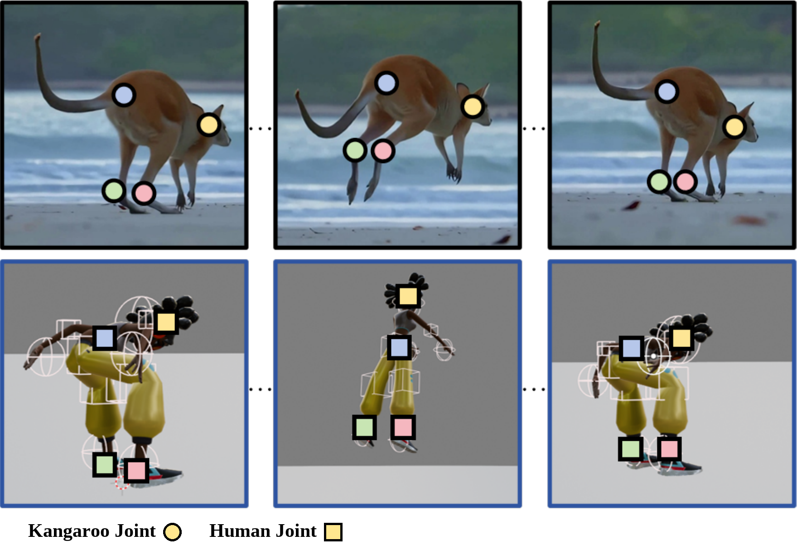

Kangaroo-like jumping
Force, recoil, and airborne timing become a plausible human jump.
arXiv 2026
1Peking University 2Nankai University 3The University of Hong Kong 4Zhejiang University 5Pengcheng Laboratory
Motivation
Animators often begin by watching motion before designing motion. A kangaroo hop, a butterfly wing flap, or the periodic paw motion of a beckoning cat can suggest timing, rhythm, force, and attitude.
But in authoring, the goal is rarely to copy the source body literally. Artists want a plausible human performance: a starting point that keeps the dynamic impression of the reference while remaining easy to edit, control, and refine.
Signature Examples
A kangaroo jump and a butterfly flap make the challenge concrete: the output should not copy the source body, but it should keep the timing, force, and rhythm that make the motion recognizable.
Force, recoil, and airborne timing become a plausible human jump.

Repeated local wing beats become rhythmic human arm motion.
The Gap
A single character video can be full of motion personality, but it arrives without the clean structure that conventional pipelines expect.
Video-based mocap is built around human skeletons or body models, so a kangaroo, a toy, or a stylized character falls outside its usual shape space.
Traditional retargeting often starts from structured 3D motion and a known mapping between bodies. In-the-wild videos usually provide neither.
A single clip may reveal timing, rhythm, and attitude, but not a reliable 3D reconstruction or a clean topology for the source character.
Key Insight
AnyAct does not try to recover the source character. Instead, it asks which part of the motion remains meaningful after the body changes.
Sparse local articulated cues, such as a limb swing, a repeated flap, or the rise-and-fall pattern of a jump, can carry the dynamic impression across very different topologies. A complete source reconstruction is not required; the motion idea remains.

Method Story
AnyAct follows a simple handoff: find the motion cues that can transfer, turn them into local control, then let a human motion generator produce an editable first draft.
VFE finds sparse 2D local trajectories using animal, human, or user-guided keypoint extraction, depending on the input character.
A ControlNet-like 2D Local Adapter converts those local trajectories into conditioning signals for MoMask++.
The output is a plausible human reenactment meant to be steered, edited, and refined in an authoring workflow.

Why It Works
Because paired character-video and human-motion examples are unavailable, AnyAct creates supervision by projecting human motion into augmented sparse 2D conditions.
A 3D-conditioned branch first learns a cleaner motion relationship, then transfers that knowledge to the 2D branch used for monocular videos.
Local cues describe how parts move; root trajectory describes where the body goes. Separating them keeps the generated motion controllable.
Results Gallery
Across animals, toys, and stylized characters, AnyAct preserves recognizable dynamics in readable human performances.

A floating rhythm becomes grounded.
A drifting source character becomes a grounded human dance, preserving the side-to-side rhythm rather than the source shape.
Different gaits become readable human walks without requiring the original body plan.

lifted steps / light gait

short beats / torso sway
The reenactment keeps more than action labels: posture, weight, and stance remain part of the performance.

low posture / arm-led weight

heavy stride / broad posture
Even when the source is a toy or a low-slung animal, local timing cues can become a human motion style.

lateral rocking / side sway

rigid cadence / crisp timing

A harder stress test.
Repeated impacts and recoil are preserved as an in-place human jumping rhythm.
Artist Control
AnyAct is designed for authoring, not just one-shot generation. The resulting human motion can be steered with trajectories and adjusted with intuitive edits.

The same local motion can follow different global paths, such as walking forward or around a half-circle.

The artist can exaggerate or dampen the vertical impulse after generation.

Simple pose-level edits change the style while preserving the source rhythm.
Beyond the Main Setting
Although AnyAct is designed for non-human character videos, the same sparse-cue representation can also guide reenactment from human-character videos.

DancingBox studies a different capture setting with physical proxies, explicit ground cues, user interaction, and per-sample tuning. AnyAct targets ordinary monocular character videos without known topology or clean 3D source motion.

Citation
@article{chen2026anyact,
title={AnyAct: Towards Human Reenactment of Character Motion From Video},
author={Chen, Liuhan and Zhong, Lei and Wang, Jiawei and Shuai, Qin and Yuan, Li and Fan, Leidong and Li, Qing and Liu, Kanglin},
journal={arXiv preprint arXiv:2605.15497},
year={2026}
}